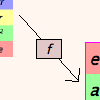

First Tutorial
Welcome to the first Group Explorer tutorial! This first tutorial is designed to give you both motive and opportunity to begin your own explorations. We start with a tour of the major visuals Group Explorer offers and then have a description of the most useful features.
This page is meant to be a springboard, so don’t hesitate to follow any of the (many) links below, even if you haven’t read this whole page. That’s the point of this tutorial–to help you start to explore.
Pictures
Group Explorer gives four ways to answer the question “What does a group look like?” This is its primary aim and the reason for its creation.
The multiplication table is the simplest way to picture a group, and explicitly shows the group operation.

- Definition of a multiplication table
- Introduction to multiplication tables (Getting Started pages)
- Basic manipulations of a multiplication table (Tutorial)
- Complete information about the multiplication table interface (User Manual)
Groups describe symmetry, sometimes the symmetry of three-dimensional objects. Thus these objects have the symmetry the group describes.

- Definition of an object of symmetry
- Complete information about the object of symmetry interface (User Manual)
Cayley diagrams show the group as a graph of elements interacting with each other. They show the group’s structure very well, exemplifying Cayley’s theorem by showing how the group acts on itself.
- Definition of a Cayley diagram
- Introduction to Cayley diagrams (Getting Started pages)
- Basic manipulations of a Cayley diagram (Tutorial)
- Complete information about the Cayley diagram interfacel (User Manual)
Cycle graphs show an important relationship among the elements of the group by exhibiting the group’s orbits.

Features
Here are some of hte most important things not to miss about how Group Explorer makes gropu theory more accessible and intuitive.
Each picture of a group is very interactive

Study properties of the group by reorganizing a diagram or highlighting it in different ways. Save useful views as images to use in a document, email, or website.
Group Explorer has a large library of groups

The main page of the application is a list of groups known to the software. It is very handy for learning by example, for testing conjectures, and getting one’s hands dirty in the real subject matter of group theory. Each group in the library, when clicked, opens a group info window full of useful information about the group.
Help links appear in many locations

Many portions of the software contain links to useful explanations. In addition to the help pages you’re reading now, group info windows may contain links to the help documentation or to dynamic generations of illustrations of various concepts. Also, each visualizer has a help button to take you directly to the help for that visualizer.
Groups can be connected and compared

You need not be content with examining groups in isolation. Sheets are an important tool that lets you create homomorphisms between groups, see complex diagrams like subgroup lattices, and more.